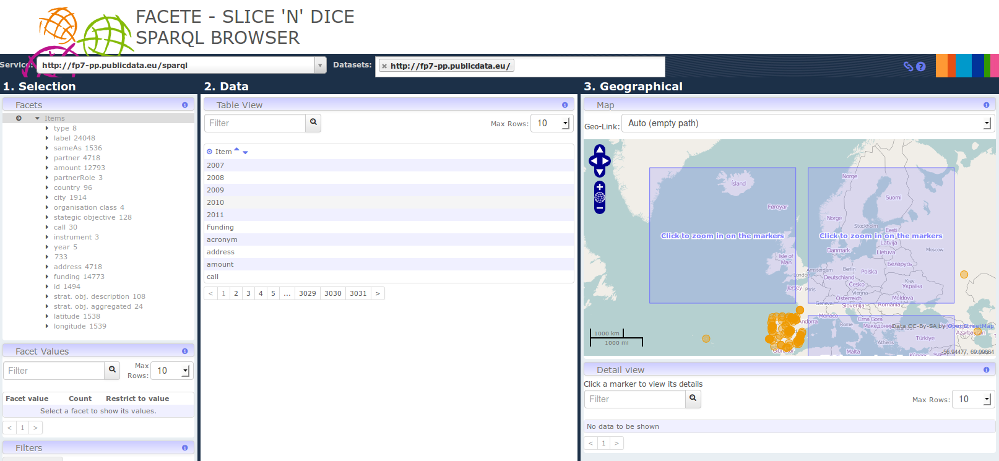
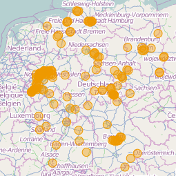
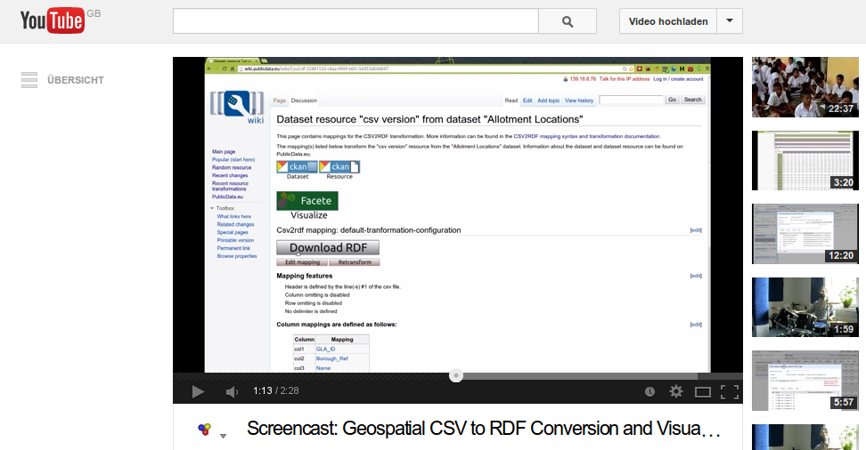

Facete
Facete is a JavaScript application for browsing (spatial) data that is accessible via SPARQL endpoints. Source Code »
Demos
| Screenshot | Description | Links |
|---|---|---|
|

|
This demo shows Facete on the Framework Programme 7 Information and Communication Technologies Project Partners dataset. As such, one can for example browse the partners of respective EU projects and also how much money they were granted. This dataset includes for instance the LOD2 project, under which Facete was partially funded. | |
|

|
Facete showing the public information on airport bases available at the public European Environment Agency (EEA) Sparql Endpoint. | Airbase Stations for industrial use in Germany |
|

|
Airbase Stations for industrial use |